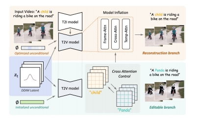

P2
Outline
- Inverse problems
- Setup
- Replacement-based methods
- Reconstruction-based methods
P3
Diffusion Models for Inverse Problems
Setup
Goal: denoise and super-resolve an image


P4
Goal: recover the masked region of an image


We want to use the same diffusion model for different problems!
P5
Diffusion Models for Inverse Problems: Two Paradigms

Replacement-based methods
(Overwrites model prediction with known information)

Reconstruction-based methods
(Approximate classifier-free guidance without additional training)
P6
Replacement-based Methods: An Example

Song et al., "Score-Based Generative Modeling through Stochastic Differential Equations", ICLR 2021
P7
Reconstruction-based Methods: An Example

Chung et al., "Diffusion Posterior Sampling for General Noisy Inverse Problems", ICLR 2023
P8
Diffusion Posterior Sampling
In the Gaussian case,
$$ p(\mathbf{y} |\mathbb{E} [\mathbf{x} _ 0|\mathbf{x} _ t])=-c||\mathcal{A} \mathbf{(\hat{x}} _ 0)-\mathbf{y} ||^2_2 $$
Maximizing the likelihood is minimizing the L2 distance between measured and generated!

Chung et al., "Diffusion Posterior Sampling for General Noisy Inverse Problems", ICLR 2023
P9
Solving Inverse Problems with Diffusion Models
Reconstruction-based methods
- ScoreSDE: simple linear problems, e.g., inpainting, colorization; later extended to MRI and CT.
- ILVR: more linear problems, e.g., super-resolution.
- SNIPS: slow solution for noisy linear problems.
- CCDF: better initializations.
- DDRM: fast solution for all noisy linear problems, and JPEG.
Choi et al., "ILVR: Conditioning Method for Denoising Diffusion Probabilistic Models", ICCV 2021
Kawar et al., "SNIPS: Solving Noisy Inverse Problems Stochastically", NeurIPS 2021
Chung et al., "Come-Closer-Diffuse-Faster: Accelerating Conditional Diffusion Models for Inverse Problems through Stochastic Contraction", CVPR 2022
Song et al., "Solving Inverse Problems in Medical Imaging with Score-Based Generative Models", ICLR 2022
Kawar et al., "Denoising Diffusion Restoration Models", NeurIPS 2022
P10
Solving Inverse Problems with Diffusion Models
Replacement-based methods
- Video Diffusion/Pyramid DDPM: used for uper-resolution.
- Pseudoinverse guidance: linear and some non-differentiable problems, e.g., JPEG
- MCG: combines replacement & reconstruction for linear problems.
Others
- CSGM: Posterior sampling with Langevin Dynamics based on the diffusion score model.
- RED-Diff: A Regularizing-by-Denoising (RED), variational inference approach.
- Posterior sampling: use RealNVP to approximate posterior samples from diffusion models.
Ho et al., "Video Diffusion Models", NeurIPS 2022
Chung et al., "Improving Diffusion Models for Inverse Problems using Manifold Constraints", NeurIPS 2022
Ryu and Ye, "Pyramidal Denoising Diffusion Probabilistic Models", arXiv 2022
Chung et al., "Diffusion Posterior Sampling for General Noisy Inverse Problems", arXiv 2022
Song et al., "Pseudoinverse-Guided Diffusion Models for Inverse Problems", ICLR 2023
Jalal et al., "Robust Compressed Sensing MRI with Deep Generative Priors", NeurIPS 2021
Mardani et al., "A Variational Perspective on Solving Inverse Problems with Diffusion Models", arXiv 2023
Feng et al., "Score-Based Diffusion Models as Principled Priors for Inverse Imaging", arXiv 2023
P11
3D
- Diffusion on various 3D representations
- 2D diffusion models for 3D generation
- Diffusion models for view synthesis
- 3D reconstruction
- 3D editing
P12
Diffusion Models for Point Clouds
A set of points with location information.


Zhou et al., "3D Shape Generation and Completion through Point-Voxel Diffusion", ICCV 2021
Liu et al, "Point-Voxel CNN for Efficient 3D Deep Learning", NeurIPS 2019
P13
Diffusion Models for Point Clouds

Zhou et al., "3D Shape Generation and Completion through Point-Voxel Diffusion", ICCV 2021
P14
Diffusion Models for Point Clouds

Zeng et al., "LION: Latent Point Diffusion Models for 3D Shape Generation", NeurIPS 2022
P15
Diffusion Models for Point Clouds
Point-E uses a synthetic view from fine-tuned GLIDE, and then ”lifts” the image to a 3d point cloud.


Nichol et al., "Point-E: A System for Generating 3D Point Clouds from Complex Prompts", arXiv 2022
P16
Diffusion Models for Signed Distance Functions
SDF is a function representation of a surface.
For each location x, |SDF(x)| = smallest distance to any point on the surface.

P17
Diffusion Models for Signed Distance Functions
- Memory of SDF grows cubically with resolution
- Wavelets can be used for compression!
- Diffusion for coarse coefficients, then predict detailed ones.


Hui et al., "Neural Wavelet-domain Diffusion for 3D Shape Generation", arXiv 2022
P18
Diffusion Models for Signed Distance Functions

Latent space diffusion for SDFs, where conditioning can be provided with cross attention
Chou et al., "DiffusionSDF: Conditional Generative Modeling of Signed Distance Functions", arXiv 2022
P19
Diffusion Models for Other 3D Representations
Neural Radiance Fields (NeRF) is another representation of a 3D object.

P20
Diffusion Models for Other 3D Representations

NeRF
(Fully implicit)

Voxels
(Explicit / hybrid)

Triplanes
(Factorized, hybrid)
Image from EG3D paper.
P21
Diffusion Models for Other 3D Representations
- Triplanes, regularized ReLU Fields, the MLP of NeRFs...
- A good representation is important!

Triplane diffusion

Regularized ReLU Fields

Implicit MLP of NeRFs
Shue et al., "3D Neural Field Generation using Triplane Diffusion", arXiv 2022
Yang et al., "Learning a Diffusion Prior for NeRFs", ICLR Workshop 2023
Jun and Nichol, "Shap-E: Generating Conditional 3D Implicit Functions", arXiv 2023
P22
Outline
- 2D diffusion models for 3D generation
P23
2D Diffusion Models for 3D Generation
- Just now, we discussed diffusion models directly on 3d.
- However, there are a lot fewer 3d data than 2d.
- A lot of experiments are based on ShapeNet!
- Can we use 2d diffusion models as a “prior” for 3d?
P25
DreamFusion: Setup
- Suppose there is a text-to-image diffusion model.
- Goal: optimize NeRF parameter such that each angle “looks good” from the text-to-image model.
- Unlike ancestral sampling (e.g., DDIM), the underlying parameters are being optimized over some loss function.


Poole et al., "DreamFusion: Text-to-3D using 2D Diffusion", ICLR 2023
P26
DreamFusion: Score Distillation Sampling

Poole et al., "DreamFusion: Text-to-3D using 2D Diffusion", ICLR 2023
P27
DreamFusion: Score Distillation Sampling
Consider the KL term to minimize (given t):
$$ \mathbf{KL} (q(\mathbf{z} _ t|g(\theta );y,t)||p\phi (\mathbf{z} _ t;y,t)) $$
KL between noisy real image distribution and generated image distributions, conditioned on y!
KL and its gradient is defined as:

(B) can be derived from chain rule
$$
\nabla _ \theta \log p _ \phi (\mathbf{z} _ t|y)=s _ \phi (\mathbf{z} _ t|y)\frac{\partial \mathbf{z} _ t}{\partial \theta }=\alpha _ ts _ \phi (\mathbf{z} _ t|y)\frac{\partial \mathbf{x} }{\partial \theta } =-\frac{\alpha _ t}{\sigma _ t}\hat{\epsilon }_ \phi (\mathbf{z} _ t|y)\frac{\partial \mathbf{x} }{\partial \theta }
$$
(A) is the gradient of the entropy of the forward process with fixed variance = 0.
Poole et al., "DreamFusion: Text-to-3D using 2D Diffusion", ICLR 2023
P28
DreamFusion: Score Distillation Sampling
$$ (A)+(B)=\frac{\alpha _ t}{\sigma _ t}\hat{\epsilon } _ \phi (\mathbf{z} _ t|y)\frac{\partial \mathbf{x} }{\partial \theta } $$
However, this objective can be quite noisy.
Alternatively, we can consider a “baseline” approach in reinforcement learning: add a component that has zero mean but reduces variance. Writing out (A) again:

Thus, we have:

This has the same mean, but reduced variance, as we train \(\hat{\epsilon } _ \phi\) to predict \(\epsilon\)
Poole et al., "DreamFusion: Text-to-3D using 2D Diffusion", ICLR 2023
P29
DreamFusion in Text-to-3D
- SDS can be used to optimize a 3D representation, like NeRF.

Poole et al., "DreamFusion: Text-to-3D using 2D Diffusion", ICLR 2023
P30
Extensions to SDS: Magic3D
2x speed and higher resolution
- Accelerate NeRF with Instant-NGP, for coarse representations.
- Optimize a fine mesh model with differentiable renderer.

Lin et al., "Magic3D: High-Resolution Text-to-3D Content Creation", CVPR 2023
P31
Alternative to SDS: Score Jacobian Chaining
A different formulation, motivated from approximating 3D score.

In principle, the diffusion model is the noisy 2D score (over clean images),
but in practice, the diffusion model suffers from out-of-distribution (OOD) issues!
For diffusion model on noisy images, the non-noisy images are OOD!
Wang et al., "Score Jacobian Chaining: Lifting Pretrained 2D Diffusion Models for 3D Generation", CVPR 2023.
P32
Score Jacobian Chaining
SJC approximates noisy score with “Perturb-and-Average Scoring”, which is not present in SDS.
- Use score model on multiple noise-perturbed data, then average it.

Wang et al., "Score Jacobian Chaining: Lifting Pretrained 2D Diffusion Models for 3D Generation", CVPR 2023.
P33
SJC and SDS
SJC is a competitive alternative to SDS.

Wang et al., "Score Jacobian Chaining: Lifting Pretrained 2D Diffusion Models for 3D Generation", CVPR 2023.
P34
Alternative to SDS: ProlificDreamer
- SDS-based method often set classifier-guidance weight to 100, which limits the “diversity” of the generated samples.
- ProlificDreamer reduces this to 7.5, leading to diverse samples.

Wang et al., "ProlificDreamer: High-Fidelity and Diverse Text-to-3D Generation with Variational Score Distillation", arXiv 2023
P35
ProlificDreamer and Variational Score Distillation
Instead of maximizing the likelihood under diffusion model, VSD minimizes the KL divergence via variational inference.
$$ \begin{matrix} \min_{\mu } D _ {\mathrm{KL} }(q^\mu _ 0(\mathbf{x} _ 0|y)||p _ 0(\mathbf{x} _ 0|y)). \\ \quad \mu \quad \text{is the distribution of NeRFs} . \end{matrix} $$
Suppose is a \(\theta _ \tau \sim \mu \) NeRF sample, then VSD simulates this ODE:

- Diffusion model can be used to approximate score of noisy real images.
- How about noisy rendered images? sss
P36
ProlificDreamer and Variational Score Distillation
- Learn another diffusion model to approximate the score of noisy rendered images!

Wang et al., "ProlificDreamer: High-Fidelity and Diverse Text-to-3D Generation with Variational Score Distillation", arXiv 2023
P37
Why does VSD work in practice?
-
The valid text-to-image NeRFs form a distribution with infinite possibilities!
-
In SDS, epsilon is the score of noisy “dirac distribution” over finite renders, which converges to the true score with infinite renders!
-
In VSD, the LoRA model aims to represent the (true) score of noisy distribution over infinite number of renders!
-
If the generated NeRF distribution is only one point and LoRA overfits perfectly, then VSD = SDS!
-
But LoRA has good generalization (and learns from a trajectory of NeRFs), so closer to the true score!
-
This is analogous to
- Representing the dataset score via mixture of Gaussians on the dataset (SDS), versus
- Representing the dataset score via the LoRA UNet (VSD)
Wang et al., "ProlificDreamer: High-Fidelity and Diverse Text-to-3D Generation with Variational Score Distillation", arXiv 2023
P38
Outline
- Diffusion models for view synthesis
P39
Novel-view Synthesis with Diffusion Models
- These do not produce 3D as output, but synthesis the view at different angles.
Watson et al., "Novel View Synthesis with Diffusion Models", ICLR 2023
P40
3DiM
- Condition on a frame and two poses, predict another frame.

UNet with frame cross-attention

Sample based on stochastic conditions,
allowing the use of multiple conditional frames.
Watson et al., "Novel View Synthesis with Diffusion Models", ICLR 2023
P41
GenVS
- 3D-aware architecture with latent feature field.
- Use diffusion model to improve render quality based on structure.

Chan et al., "Generative Novel View Synthesis with 3D-Aware Diffusion Models", arXiv 2023
P42
Outline
- 3D reconstruction
P43
NeuralLift-360 for 3D reconstruction
- SDS + Fine-tuned CLIP text embedding + Depth supervision

Xu et al., "NeuralLift-360: Lifting An In-the-wild 2D Photo to A 3D Object with 360° Views", CVPR 2023
P44
Zero 1-to-3
- Generate novel view from 1 view and pose, with 2d model.
- Then, run SJC / SDS-like optimizations with view-conditioned model.

Liu et al., "Zero-1-to-3: Zero-shot One Image to 3D Object", arXiv 2023
P45
Outline
-
Inverse problems
-
3D
-
Video
-
Miscellaneous
-
3D editing
P46
Instruct NeRF2NeRF
Edit a 3D scene with text instructions

Haque et al., "Instruct-NeRF2NeRF: Editing 3D Scenes with Instructions", arXiv 2023
P47
Instruct NeRF2NeRF
Edit a 3D scene with text instructions
- Given existing scene, use Instruct Pix2Pix to edit image at different viewpoints.
- Continue to train the NeRF and repeat the above process

Haque et al., "Instruct-NeRF2NeRF: Editing 3D Scenes with Instructions", arXiv 2023
P48
Instruct NeRF2NeRF
With each iteration, the edits become more consistent.
Haque et al., "Instruct-NeRF2NeRF: Editing 3D Scenes with Instructions", arXiv 2023
P49
Vox-E: Text-guided Voxel Editing of 3D Objects
- Text-guided object editing with SDS
- Regularize the structure of the new voxel grid.

Sella et al., "Vox-E: Text-guided Voxel Editing of 3D Objects", arXiv 2023
P50
Video
- Video generative models
P51
Video Diffusion Models
3D UNet from a 2D UNet.
- 3x3 2d conv to 1x3x3 3d conv.
- Factorized spatial and temporal attentions.


Ho et al., "Video Diffusion Models", NeurIPS 2022
P52
Imagen Video: Large Scale Text-to-Video
- 7 cascade models in total.
- 1 Base model (16x40x24)
- 3 Temporal super-resolution models.
- 3 Spatial super-resolution models.

Ho et al., "Imagen Video: High Definition Video Generation with Diffusion Models", 2022
P53
Make-a-Video
- Start with an unCLIP (DALL-E 2) base network.

Singer et al., "Make-A-Video: Text-to-Video Generation without Text-Video Data", ICLR 2023
P54
Make-a-Video

3D Conv from Spatial Conv + Temporal Conv

3D Attn from Spatial Attn + Temporal Attn
Different from Imagen Video, only the image prior takes text as input!
Singer et al., "Make-A-Video: Text-to-Video Generation without Text-Video Data", ICLR 2023
P55
Video LDM
- Similarly, fine-tune a text-to-video model from text-to-image model.

Blattmann et al., "Align your Latents: High-Resolution Video Synthesis with Latent Diffusion Models", CVPR 2023
P56
Video LDM: Decoder Fine-tuning
- Fine-tune the decoder to be video-aware, keeping encoder frozen.

Blattmann et al., "Align your Latents: High-Resolution Video Synthesis with Latent Diffusion Models", CVPR 2023
P57
Video LDM: LDM Fine-tuning
- Interleave spatial layers and temporal layers.
- The spatial layers are frozen, whereas temporal layers are trained.
- Temporal layers can be Conv3D or Temporal attentions.
- Context can be added for autoregressive generation.

Optional context via learned down-sampling operation.
For Conv3D,
shape is [batch, time, channel, height, width]
For Temporal attention,
shape is [batch \(^\ast \)height\(^\ast \) width, time, channel]
Blattmann et al., "Align your Latents: High-Resolution Video Synthesis with Latent Diffusion Models", CVPR 2023
P58
Video LDM: Upsampling
- After key latent frames are generated, the latent frames go through temporal interpolation.
- Then, they are decoded to pixel space and optionally upsampled.

Blattmann et al., "Align your Latents: High-Resolution Video Synthesis with Latent Diffusion Models", CVPR 2023
P59
Outline
- Video style transfer / editing methods
P60
Gen-1
- Transfer the style of a video using text prompts given a “driving video”

Esser et al., "Structure and Content-Guided Video Synthesis with Diffusion Models", arXiv 2023
P61
Gen-1
- Condition on structure (depth) and content (CLIP) information.
- Depth maps are passed with latents as input conditions.
- CLIP image embeddings are provided via cross-attention blocks.
- During inference, CLIP text embeddings are converted to CLIP image embeddings.

Esser et al., "Structure and Content-Guided Video Synthesis with Diffusion Models", arXiv 2023
P62
Pix2Video: Video Editing Using Image Diffusion
- Given a sequence of frames, generate a new set of images that reflects an edit.
- Editing methods on individual images fail to preserve temporal information.
Ceylan et al., "Pix2Video: Video Editing using Image Diffusion", arXiv 2023
P63
Pix2Video: Video Editing Using Image Diffusion

- Self-Attention injection: use the features of previous frame for Key and Values.

Ceylan et al., "Pix2Video: Video Editing using Image Diffusion", arXiv 2023
P64
Pix2Video: Video Editing Using Image Diffusion

Ceylan et al., "Pix2Video: Video Editing using Image Diffusion", arXiv 2023
P65
Pix2Video: Video Editing Using Image Diffusion
- The two methods improve the temporal consistency of the final video!
Ceylan et al., "Pix2Video: Video Editing using Image Diffusion", arXiv 2023
P66
Concurrent / Related Works

Video-P2P: Cross-Attention Control on text-to-video model

FateZero: Store attention maps from DDIM inversion for later use

Tune-A-Video: Fine-tune projection matrices of the attention layers, from text2image model to text2video model.

Vid2vid-zero: Learn a null-text embedding for inversion, then use cross-frame attention with original weights.
P67
Miscellaneous
- Diffusion models for large contents
P68
Diffusion Models for Large Contents
- Suppose model is trained on small, squared images, how to extend it to larger images?
- Outpainting is always a solution, but not a very efficient one!
Let us generate this image with a diffusion model only trained on squared regions:

- Generate the center region \(q(\mathbf{x} _ 1,\mathbf{x} _ 2)\)
- Generate the surrounding region conditioned on parts of the center image \(q(\mathbf{x} _ 3|\mathbf{x} _ 2)\)

Latency scales linearly with the content size!
P69
Diffusion Models for Large Contents
- Unlike autoregressive models, diffusion models can generate large contents in parallel!

Zhang et al., "DiffCollage: Parallel Generation of Large Content with Diffusion Models", CVPR 2023
P70
Diffusion Models for Large Contents
- A “large” diffusion model from “small” diffusion models!


Zhang et al., "DiffCollage: Parallel Generation of Large Content with Diffusion Models", CVPR 2023
P71
Diffusion Models for Large Contents
- Applications such as long images, looped motion, 360 images…
Zhang et al., "DiffCollage: Parallel Generation of Large Content with Diffusion Models", CVPR 2023
P72
Related Works
- Based on similar ideas but differ in how overlapping regions are mixed.


Jiménez, "Mixture of Diffusers for scene composition and high resolution image generation", arXiv 2023
Bar-Tal et al., "MultiDiffusion: Fusing Diffusion Paths for Controlled Image Generation", ICML 2023
P73
Outline
- Safety and limitations of diffusion models
P74
Data Memorization in Diffusion Models
- Due to the likelihood-base objective function, diffusion models can ”memorize” data.
- And with a higher chance than GANs!
- Nevertheless, a lot of “memorized images” are highly-duplicated in the dataset.

Carlini et al., "Extracting Training Data from Diffusion Models", arXiv 2023
P75
Erasing Concepts in Diffusion Models
- Fine-tune a model to remove unwanted concepts.
- From original model, obtain score via negative CFG.
- A new model is fine-tuned from the new score function.


Gandikota et al., "Erasing Concepts from Diffusion Models", arXiv 2023
P77
Part I
Ho et al., "Denoising Diffusion Probabilistic Models", NeurIPS 2020
Song et al., "Score-Based Generative Modeling through Stochastic Differential Equations", ICLR 2021
Kingma et al., "Variational Diffusion Models", arXiv 2021
Karras et al., "Elucidating the Design Space of Diffusion-Based Generative Models", NeurIPS 2022
Song et al., "Denoising Diffusion Implicit Models", ICLR 2021
Jolicoeur-Martineau et al., "Gotta Go Fast When Generating Data with Score-Based Models", arXiv 2021
Liu et al., "Pseudo Numerical Methods for Diffusion Models on Manifolds", ICLR 2022
Lu et al., "DPM-Solver: A Fast ODE Solver for Diffusion Probabilistic Model Sampling in Around 10 Steps", NeurIPS 2022
Lu et al., "DPM-Solver++: Fast Solver for Guided Sampling of Diffusion Probabilistic Models", NeurIPS 2022
Zhang and Chen, "Fast Sampling of Diffusion Models with Exponential Integrator", arXiv 2022
Zhang et al., "gDDIM: Generalized denoising diffusion implicit models", arXiv 2022
Zhao et al., "UniPC: A Unified Predictor-Corrector Framework for Fast Sampling of Diffusion Models", arXiv 2023
Shih et al., "Parallel Sampling of Diffusion Models", arxiv 2023
Chen et al., "A Geometric Perspective on Diffusion Models", arXiv 2023
Xiao et al., "Tackling the Generative Learning Trilemma with Denoising Diffusion GANs", arXiv 2021
Salimans and Ho, "Progressive Distillation for Fast Sampling of Diffusion Models", ICLR 2022
Meng et al., "On Distillation of Guided Diffusion Models", arXiv 2022
Dockhorn et al., "GENIE: Higher-Order Denoising Diffusion Solvers", NeurIPS 2022
Watson et al., "Learning Fast Samplers for Diffusion Models by Differentiating Through Sample Quality", ICLR 2022
Phung et al., "Wavelet Diffusion Models Are Fast and Scalable Image Generators", CVPR 2023
Dhariwal and Nichol, "Diffusion Models Beat GANs on Image Synthesis", arXiv 2021
Ho and Salimans, "Classifier-Free Diffusion Guidance", NeurIPS Workshop 2021
Automatic1111, "Negative Prompt", GitHub
Hong et al., "Improving Sample Quality of Diffusion Models Using Self-Attention Guidance", arXiv 2022
Saharia et al., "Image Super-Resolution via Iterative Refinement", arXiv 2021
Ho et al., "Cascaded Diffusion Models for High Fidelity Image Generation", JMLR 2021
Sinha et al., "D2C: Diffusion-Denoising Models for Few-shot Conditional Generation", NeurIPS 2021
Vahdat et al., "Score-based Generative Modeling in Latent Space", arXiv 2021
Rombach et al., "High-Resolution Image Synthesis with Latent Diffusion Models", CVPR 2022
Daras et al., "Score-Guided Intermediate Layer Optimization: Fast Langevin Mixing for Inverse Problems", ICML 2022
P78
Part I (cont’d)
Bortoli et al., "Diffusion Schrödinger Bridge", NeurIPS 2021
Bortoli et al., "Riemannian Score-Based Generative Modelling", NeurIPS 2022
Neklyudov et al., "Action Matching: Learning Stochastic Dynamics from Samples", ICML 2023
Bansal et al., "Cold Diffusion: Inverting Arbitrary Image Transforms Without Noise", arXiv 2022
Daras et al., "Soft Diffusion: Score Matching for General Corruptions", TMLR 2023
Delbracio and Milanfar, "Inversion by Direct Iteration: An Alternative to Denoising Diffusion for Image Restoration", arXiv 2023
Luo et al., "Image Restoration with Mean-Reverting Stochastic Differential Equations", ICML 2023
P79
Part II
Bao et al., "All are Worth Words: a ViT Backbone for Score-based Diffusion Models", arXiv 2022
Peebles and Xie, "Scalable Diffusion Models with Transformers", arXiv 2022
Bao et al., "One Transformer Fits All Distributions in Multi-Modal Diffusion at Scale", arXiv 2023
Jabri et al., "Scalable Adaptive Computation for Iterative Generation", arXiv 2022
Hoogeboom et al., "simple diffusion: End-to-end diffusion for high resolution images", arXiv 2023
Meng et al., "SDEdit: Guided Image Synthesis and Editing with Stochastic Differential Equations", ICLR 2022
Li et al., "Efficient Spatially Sparse Inference for Conditional GANs and Diffusion Models", NeurIPS 2022
Avrahami et al., "Blended Diffusion for Text-driven Editing of Natural Images", CVPR 2022
Hertz et al., "Prompt-to-Prompt Image Editing with Cross-Attention Control", ICLR 2023
Kawar et al., "Imagic: Text-Based Real Image Editing with Diffusion Models", CVPR 2023
Couairon et al., "DiffEdit: Diffusion-based semantic image editing with mask guidance", ICLR 2023
Sarukkai et al., "Collage Diffusion", arXiv 2023
Bar-Tal et al., "MultiDiffusion: Fusing Diffusion Paths for Controlled Image Generation", ICML 2023
Gal et al., "An Image is Worth One Word: Personalizing Text-to-Image Generation using Textual Inversion", ICLR 2023
Ruiz et al., "DreamBooth: Fine Tuning Text-to-Image Diffusion Models for Subject-Driven Generation", CVPR 2023
Kumari et al., "Multi-Concept Customization of Text-to-Image Diffusion", CVPR 2023
Tewel et al., "Key-Locked Rank One Editing for Text-to-Image Personalization", SIGGRAPH 2023
Zhao et al., "A Recipe for Watermarking Diffusion Models", arXiv 2023
Hu et al., "LoRA: Low-Rank Adaptation of Large Language Models", ICLR 2022
Li et al., "GLIGEN: Open-Set Grounded Text-to-Image Generation", CVPR 2023
P80
Part II (cont’d)
Avrahami et al., "SpaText: Spatio-Textual Representation for Controllable Image Generation", CVPR 2023
Zhang and Agrawala, "Adding Conditional Control to Text-to-Image Diffusion Models", arXiv 2023
Mou et al., "T2I-Adapter: Learning Adapters to Dig out More Controllable Ability for Text-to-Image Diffusion Models", arXiv 2023
Orgad et al., "Editing Implicit Assumptions in Text-to-Image Diffusion Models", arXiv 2023
Han et al., "SVDiff: Compact Parameter Space for Diffusion Fine-Tuning", arXiv 2023
Xie et al., "DiffFit: Unlocking Transferability of Large Diffusion Models via Simple Parameter-Efficient Fine-Tuning", arXiv 2023
Saharia et al., "Palette: Image-to-Image Diffusion Models", SIGGRAPH 2022
Whang et al., "Deblurring via Stochastic Refinement", CVPR 2022
Xu et al., "Open-Vocabulary Panoptic Segmentation with Text-to-Image Diffusion Models", arXiv 2023
Saxena et al., "Monocular Depth Estimation using Diffusion Models", arXiv 2023
Li et al., "Your Diffusion Model is Secretly a Zero-Shot Classifier", arXiv 2023
Gowal et al., "Improving Robustness using Generated Data", NeurIPS 2021
Wang et al., "Better Diffusion Models Further Improve Adversarial Training", ICML 2023
P81
Part III
Jalal et al., "Robust Compressed Sensing MRI with Deep Generative Priors", NeurIPS 2021
Song et al., "Solving Inverse Problems in Medical Imaging with Score-Based Generative Models", ICLR 2022
Kawar et al., "Denoising Diffusion Restoration Models", NeurIPS 2022
Chung et al., "Improving Diffusion Models for Inverse Problems using Manifold Constraints", NeurIPS 2022
Ryu and Ye, "Pyramidal Denoising Diffusion Probabilistic Models", arXiv 2022
Chung et al., "Diffusion Posterior Sampling for General Noisy Inverse Problems", arXiv 2022
Feng et al., "Score-Based Diffusion Models as Principled Priors for Inverse Imaging", arXiv 2023
Song et al., "Pseudoinverse-Guided Diffusion Models for Inverse Problems", ICLR 2023
Mardani et al., "A Variational Perspective on Solving Inverse Problems with Diffusion Models", arXiv 2023
Delbracio and Milanfar, "Inversion by Direct Iteration: An Alternative to Denoising Diffusion for Image Restoration", arxiv 2023
Stevens et al., "Removing Structured Noise with Diffusion Models", arxiv 2023
Wang et al., "Zero-Shot Image Restoration Using Denoising Diffusion Null-Space Model", ICLR 2023
Zhou et al., "3D Shape Generation and Completion through Point-Voxel Diffusion", ICCV 2021
Zeng et al., "LION: Latent Point Diffusion Models for 3D Shape Generation", NeurIPS 2022
Nichol et al., "Point-E: A System for Generating 3D Point Clouds from Complex Prompts", arXiv 2022
Chou et al., "DiffusionSDF: Conditional Generative Modeling of Signed Distance Functions", arXiv 2022
Cheng et al., "SDFusion: Multimodal 3D Shape Completion, Reconstruction, and Generation", arXiv 2022
Hui et al., "Neural Wavelet-domain Diffusion for 3D Shape Generation", arXiv 2022
Shue et al., "3D Neural Field Generation using Triplane Diffusion", arXiv 2022
Yang et al., "Learning a Diffusion Prior for NeRFs", ICLR Workshop 2023
Jun and Nichol, "Shap-E: Generating Conditional 3D Implicit Functions", arXiv 2023
Poole et al., "DreamFusion: Text-to-3D using 2D Diffusion", arXiv 2022
Lin et al., "Magic3D: High-Resolution Text-to-3D Content Creation", arXiv 2022
Wang et al., "Score Jacobian Chaining: Lifting Pretrained 2D Diffusion Models for 3D Generation", arXiv 2022
Metzer et al., "Latent-NeRF for Shape-Guided Generation of 3D Shapes and Textures", arXiv 2022
Hong et al., "Debiasing Scores and Prompts of 2D Diffusion for Robust Text-to-3D Generation", CVPR Workshop 2023
Watson et al., "Novel View Synthesis with Diffusion Models", arXiv 2022
Chan et al., "Generative Novel View Synthesis with 3D-Aware Diffusion Models", arXiv 2023
Xu et al., "NeuralLift-360: Lifting An In-the-wild 2D Photo to A 3D Object with 360° Views", arXiv 2022
Zhou and Tulsiani, "SparseFusion: Distilling View-conditioned Diffusion for 3D Reconstruction", arXiv 2022
P82
Part III (cont’d)
Seo et al., "DITTO-NeRF: Diffusion-based Iterative Text To Omni-directional 3D Model", arXiv 2023
Haque et al., "Instruct-NeRF2NeRF: Editing 3D Scenes with Instructions", arXiv 2023
Sella et al., "Vox-E: Text-guided Voxel Editing of 3D Objects", arXiv 2023
Ho et al., "Video Diffusion Models", NeurIPS 2022
Harvey et al., "Flexible Diffusion Modeling of Long Videos", arXiv 2022
Voleti et al., "MCVD: Masked Conditional Video Diffusion for Prediction, Generation, and Interpolation", NeurIPS 2022
Ho et al., "Imagen Video: High Definition Video Generation with Diffusion Models", Oct 2022
Singer et al., "Make-A-Video: Text-to-Video Generation without Text-Video Data", arXiv 2022
Mei and Patel, "VIDM: Video Implicit Diffusion Models", arXiv 2022
Blattmann et al., "Align your Latents: High-Resolution Video Synthesis with Latent Diffusion Models", CVPR 2023
Wang et al., "Zero-Shot Video Editing Using Off-The-Shelf Image Diffusion Models", arXiv 2023
Ceylan et al., "Pix2Video: Video Editing using Image Diffusion", arXiv 2023
Esser et al., "Structure and Content-Guided Video Synthesis with Diffusion Models", arXiv 2023
Jiménez, "Mixture of Diffusers for scene composition and high resolution image generation", arXiv 2023
Bar-Tal et al., "MultiDiffusion: Fusing Diffusion Paths for Controlled Image Generation", arXiv 2023
Zhang et al., "DiffCollage: Parallel Generation of Large Content with Diffusion Models", CVPR 2023
Zhang et al., "MotionDiffuse: Text-Driven Human Motion Generation with Diffusion Model", arXiv 2022
Tevet et al., "Human Motion Diffusion Model", arXiv 2022
Chen et al., "Executing your Commands via Motion Diffusion in Latent Space", CVPR 2023
Du et al., "Avatars Grow Legs: Generating Smooth Human Motion from Sparse Tracking Inputs with Diffusion Model", CVPR 2023
Shafir et al., "Human Motion Diffusion as a Generative Prior", arXiv 2023
Somepalli et al., "Diffusion Art or Digital Forgery? Investigating Data Replication in Diffusion Models", CVPR 2023
Carlini et al., "Extracting Training Data from Diffusion Models", arXiv 2023
Gandikota et al., "Erasing Concepts from Diffusion Models", arXiv 2023
Kumari et al., "Ablating Concepts in Text-to-Image Diffusion Models", arXiv 2023
Somepalli et al., "Understanding and Mitigating Copying in Diffusion Models", arXiv 2023
本文出自CaterpillarStudyGroup，转载请注明出处。
https://caterpillarstudygroup.github.io/ImportantArticles/